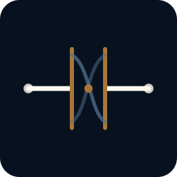
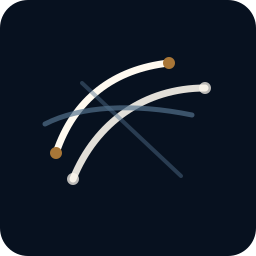

Concept A
Open Continuity Ring. The recommended baseline. Non-closed continuity with restrained nodes and an intentional gap.
Best favicon/social-avatar candidate.
Draft v0.1 mark directions. These are not final logo designs; they are concept anchors for AI review, human artist briefing, and selection criteria.
Open Continuity Ring. The recommended baseline. Non-closed continuity with restrained nodes and an intentional gap.

Revision Gate. More governance-specific. A continuity line passes through a controlled revision gate.

Nested Horizon. Long-range and layered. Elegant, but may be too abstract without careful execution.
Current recommendation: start from Concept A, borrow only a little of Concept B's controlled-revision logic if needed, and avoid making Concept C the primary mark unless a human artist can give it distinctiveness.